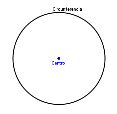
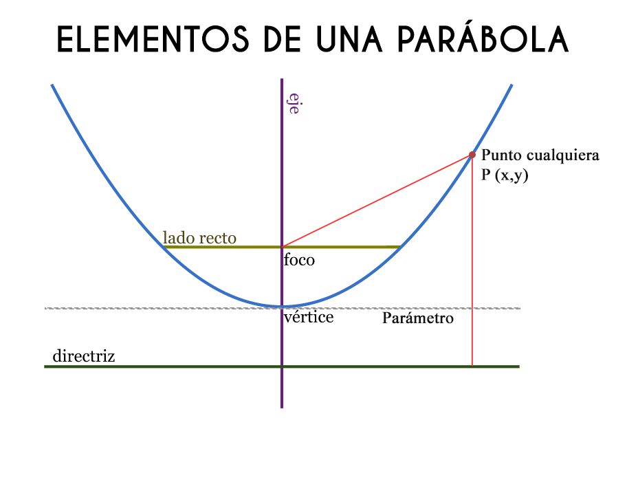
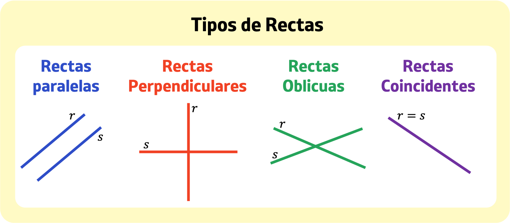

Concepto:
Las cónicas se pueden describir como conjuntos de puntos en un plano que satisfacen condiciones matemáticas específicas. Con esta definición, es posible deducir las ecuaciones que representan de manera exacta cada una de estas curvas mediante el uso del álgebra.
Lugar Geométrico:
Es el conjunto de todos los puntos que cumplen una misma condición o regla matemática.
Ejemplos para entenderlo:
Circunferencia:
Es el lugar geométrico de todos los puntos que están a la misma distancia de un punto fijo (el centro).

Parábola: Es el lugar geométrico de los puntos que están a la misma distancia de un punto (foco) y una recta (directriz).

Recta: Puede ser el lugar geométrico de puntos que siguen una relación lineal.
